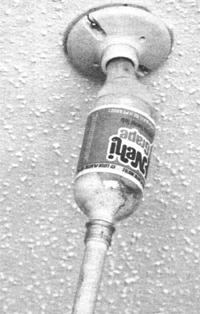
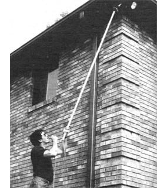
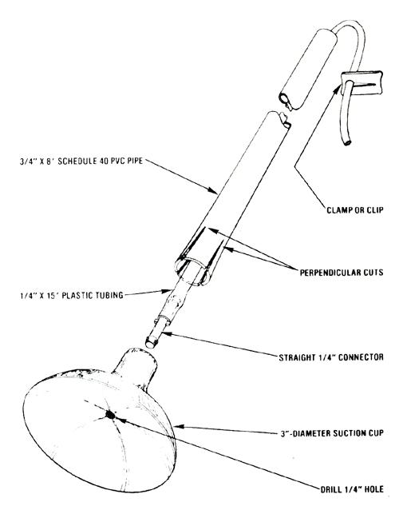

MOTHER's "bright idea" crew Outs a new twist on an old chore with these . . .
As the days grow shorter, it's a sure bet that folks will be relying more upon household lighting to extend their productive hours. However, as convenient as electric bulbs are, they do burn out . . . and replacing them especially those set in a hard-to-reach location can be a troublesome (and sometimes even dangerous) chore.
So, to make shaky stepladders and teetering chairs a thing of the past, our research staffers devised the two incandescent bulb changers you see here. The first will handle conventional indoor globes typical of those you might find in hallway ceilings, garages, and attics. It's little more than a 3' (more or less) length of 3/4" CPVC pipe forced into the neck of a half-liter plastic soda pop bottle. Since the outside diameter o f the pipe is about 7/8" (and thus is slightly larger than the opening in the bottle), one end of the plastic staff must be sanded to a taper so the joining parts are compatible. The bulb basket can then be formed by cutting of the container's base (be sure to leave about 3/8" of contour around the edge so the tool can grip the bulb), and stuffing the inside of the bottle with wads of foam upholstery padding.
Using the tool is just a matter of popping the basket over the expired bulb and pulling gently on the handle while turning it to unscrew the lamp from its socket. After the old globe is discarded, a new one can be pressed into the basket and threaded into place.
The second changer was designed for use on indoor and outdoor spotlights. Because those bulbs have somewhat flat faces, you can employ a suction cup, rather than a basket, to grip the glass. To make this "grabber", first locate a 3"-diameter rubber "foot" from a car top carrier (it must have a 1/4" socket-not a stem-for mounting, and should be available as a replacement part in auto accessory stores), and then run a 1/4" drill bit in the cup's socket and through its core to penetrate the "sucker".
Now, find yourself about 15 feet of 1/4" plastic tubing and a straight nylon connector to fit that hose, and scrounge up an 8' length of 3/4" Schedule 40 PVC pipe to serve as a handle . Depending on the design of your suction cup, it'll either fit snugly inside the pipe or force you to make two perpendicular cuts across the pipe's diameter and jam the four "fingers" over the cup's mount to hold it securely.
In any case, before you fasten the suction tip in place, install the connector to the end of the hose and then press it into the socket in back of the cup. With this done, you can feed the free end of the hose through the length of PVC pipe and let it extend out the open end.
Once the suction cup is installed, changing a spotlight takes just a few seconds. You must first place the rubber cup against the bulb's face, then establish a grip by sucking slightly on the tube as if it were a straw. Maintaining the vacuum (either by folding and pinching the tube or by using the clip from a hot water bottle), turn the tool's han dle to remove the bulb. (Replacing the light, of course, is simply a matter of reversing the procedure.)
These homemade work savers are indeed changes for the better (especially considering their nonconductive handles) . . . and, after using them, we think you'll wonder why you ever even considered climbing a stepladder.
|
 |
 |
 |